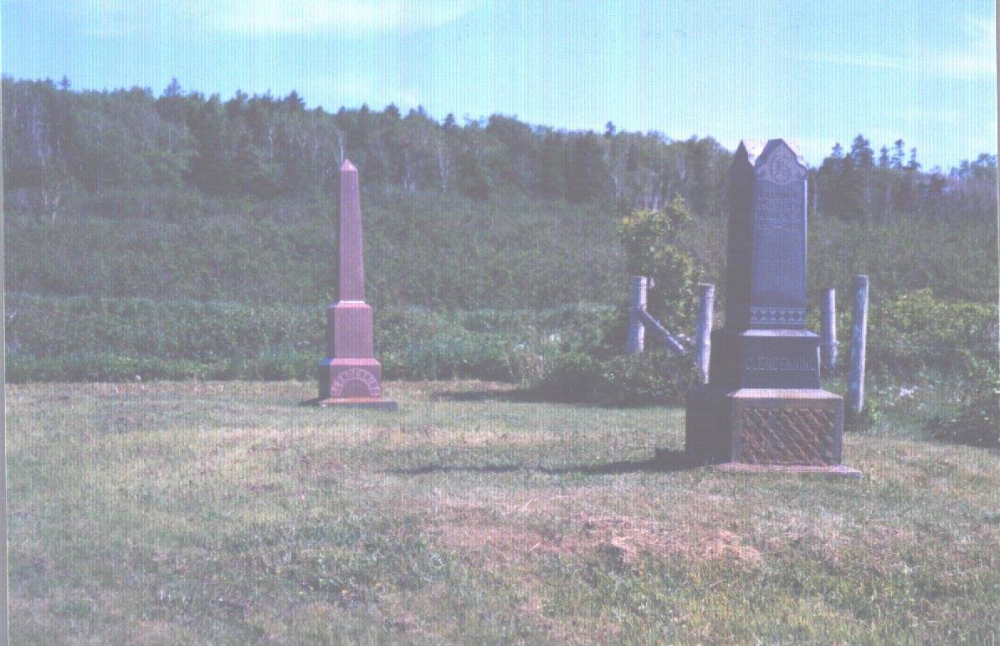
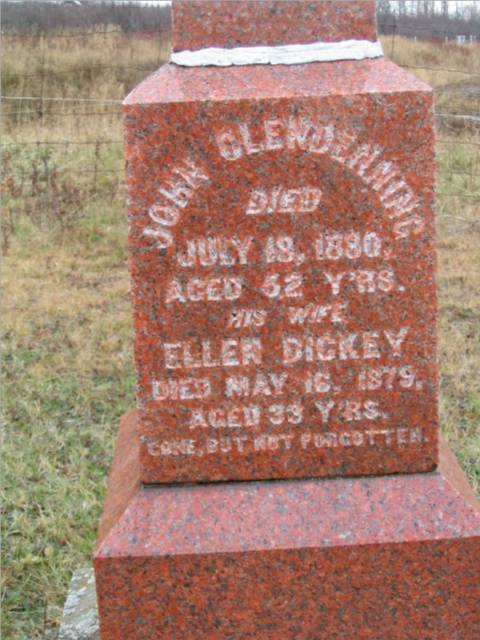
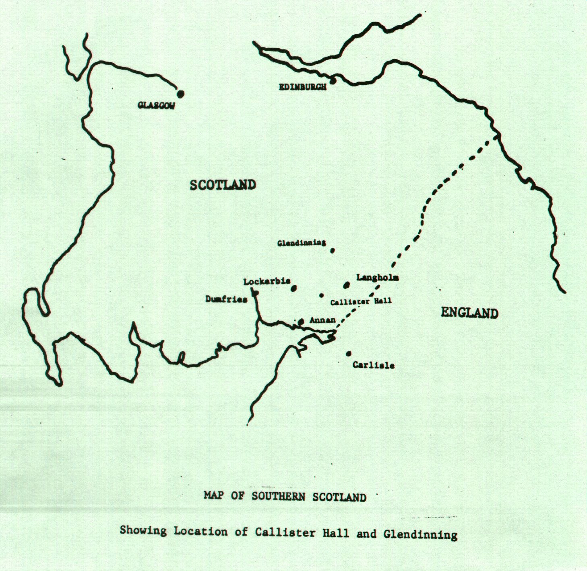
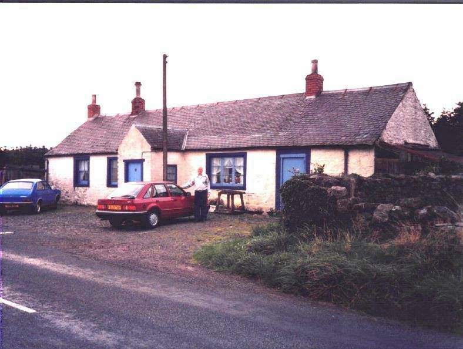
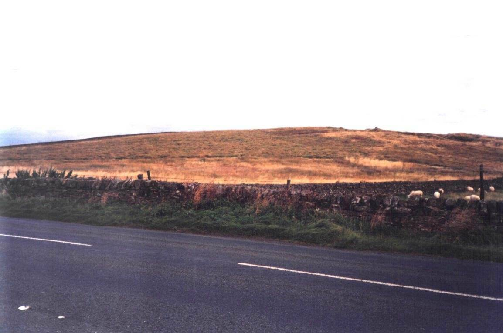
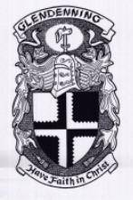
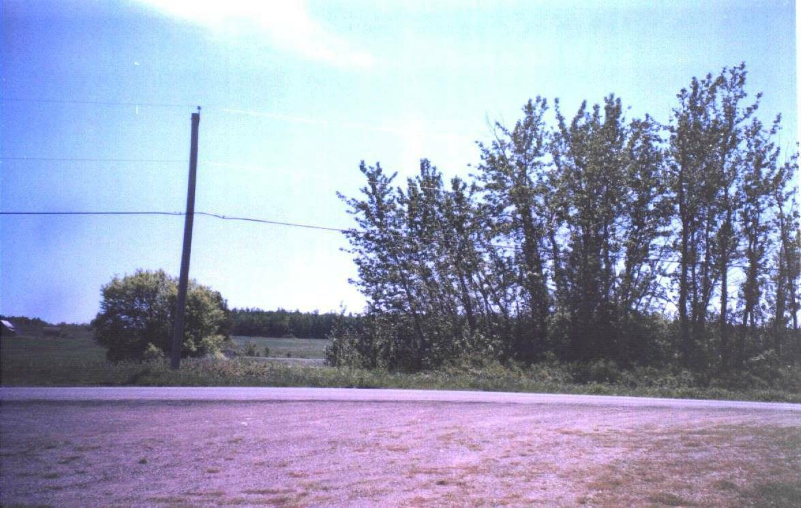
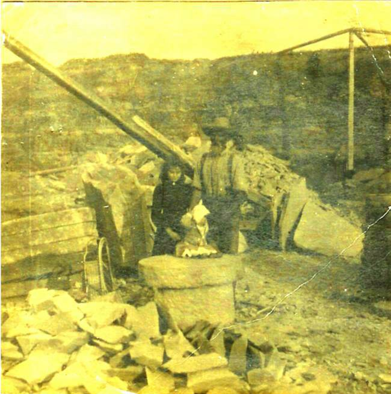

Glendenning Family Memories
GLENDENNING ROOTS
The Canadian roots of my paternal ancestors are in an area north east of Bathurst, more precisely, the inland community of Canobie. Travelling east from Bathurst along the coast towards Caraquet, one finds a number of communities familiar to the Glendenning family. Most relevant are the following as described in the Geographical Names of New Brunswick, 1875:
Bathurst, originally named St. Peters in 1671, was named for the Third Earl of Bathurst in 1826.
Salmon Beach was settled around 1820 by immigrants from Ireland and included the districts of Prospect Hill, Strawberry Plain and Mount Pleasant.
Janeville was named for Jane Dawson, wife of Benjamin Dawson who settled there about 1835.
Stonehaven was probably named for Stonehaven, Scotland.
New Bandon was settled in 1819 by several families from Bandon, Ireland.
Canobie named after Canonbie, Dumfriesshire, Scotland.
According to Pioneer Settlers of the Bay Chaleur, settlement on the coast east of Bathurst took place by the Acadians in the latter half of the 1700s and, although living on the land, they grants were not given their grants until 1812. Apparently, an organized system of granting of land did not evolve until the 1800s and even then there could be delays of a decade or more between petitioning land and receiving land. Even then, a grant was not final until at least five acres had been cleared. The first registered land grants in the area were made to James Sutherland and his brother Hugh, and to Richard Nevison in 1789.
Once settled, men began the task of clearing land and erecting a house and barn. Trees not needed were stacked, dried and burned. Few oxen or horses were available so the land was broken and cultivated with the aid of a hoe. The initial crops were planted between the stumps, which, over time, rotted and were removed. In many cases, the initial seeds were often carried by settlers from the old country.
While I do not know the precise point where my ancestors set foot in the new world, we do know that many immigrants first set foot in Canadfa in such ports as Saint John and Halifax; some likely trans-shipped to smaller ports. On the other hand, some came directly to the Miramichi, Bathurst, Pokeshaw, Bass River and Caraquet. The Bay Chaleur history records that Pokeshaw had a secure harbour and was an active fishing centre. As early as 1812, 30 acres of land had been cleared and had a number of houses constructed. Sailing vessels stopped there for water and supplies including fresh meat.
The exception to our not knowing is the account given by my Great Grandmother’s sister, Mary Ann Harley, who first set foot in Canada at Pokemouche on the Baie de Chaleur near Bathurst, New Brunswick. Mary Ann was born in Courtmacsherry, Ireland on 6 February, 1799. On her 99th birthday, she was interviewed by a newspaper in Portland, Maine where she was living. I am grateful to Willis Hamilton for a copy of an article appearing in a Portland paper at that time.
I was born in Courtmasherry, Ireland, February 6, 1799. This is a small town only a little distance from the city of Cork, near the Bay of Cork. My maiden name was Mary Ann Harley, and my father was a schoolteacher in the town. I had two brothers and three sisters. All dead now. One of my sisters lived to be 94, died on her birthday. I can remember the town where we lived very well, and the names of friends and schoolmates. I left Ireland in 1822. I can remember about my father and mother talking about the rising of ‘98; people never seemed to get tired of taking about that event. My father was of English descent, a Presbyterian and I was raised in the church.
Very well can I remember the day on which two big ships of war sailed into Cork harbor, their decks crowded with men and their masts with gay flags. These ships were bringing us the first news of the battle of Waterloo in which that terror of the world and ogre of history, Napoleon Bonaparte was defeated by our own Duke of Wellington. People went crazy with joy; the bells of the city of Cork were rung, and great bonfires were lit in celebration of the great event. Three of the officers of an Irish regiment were quartered at my father’s house for many days, and I remember some of the stories they had to tell of that terrible fight. Their bright uniforms and handsome faces made a great impression on me.
In 1822 I went to visit a lady friend in Queenstown, and while I was there the first steamboat ever to come into Irish waters came into the harbor. Everyone turned out and lined the docks to the strange craft which moved so swiftly through the waters without sail or oars. It was a wonderful thing then, but I suppose the people of Queenstown see enough such craft now. While I was in Queenstown I got a letter from my brother William in America. He was a government surveyor, and he wanted me to come over as soon as possible as he said he had a young, handsome and wealthy husband waiting for me. I went home to my parents and it was decided that I would sail for America.
I was one of 150 passengers on a sailing ship which left Cork on May 7, 1822. It was a terrible voyage. I was sick almost all the way, and glad to see land after seven weeks and three days aboard that ship. I landed at a place called Pockshaw on the Bay of Chaleur. It was a very small settlement then, only a few small houses made of logs. My brother was there waiting for me. We had to walk 75 miles through the woods to get to his home. No roads, no conveyances of any kind, not even a path. It was a trackless forest in which not one tree had been cut. We made our way by means of compass over windfalls and across brooks to Newcastle. We were three nights on the road and we had to sleep in the woods without any shelter. On the fourth night we got to Newcastle, a very small settlement. Eight months after my arrival at this place I married John Henry; he was a man of business and agent for a large mercantile firm. I had nine children and seven grew up and married. I don’t know how many descendents I have, but they must number in the hundreds. My husband died 28 years ago (1870) I lived on the Miramichi until after my husband's death, then I came to the States where some of my children lived. I had a brother named John Harley who built ships on Bolters Island near Newcastle.
Land Grants
Although my Great Grandfather settled first near the coast at Salmon Beach, he later relocated inland to Canobie. Figures xx – xx were developed from two the following documents of the New Brunswick Department of Natural Resources, Crown Land Grant Index and Grant Reference Plans.
36
Norman Peters 1892-03-07 35
F.W Ellis 1939-10-06 34
John Jagoe 1872-12-30 33
J. McCarthy 1882-08-12 32
J. McCarthy Jr 1868-04-29 31
J Glendenning 1868-08-17 30
Walter Glendenning 1873-02-17 29
H. Knowles 1886-02-23 28
E. Glendenning 1901-07-16 27
Timothy Savage 1874-04-20 26
John W. Lowe 1872-07-29 25
John Taylor 1873-06-27 24
Julian Landry 1904-02-26 23
R. H. Sealey 1929-11-29 22
Thomas. A. Knowles 1926-10-25 And
on the other side of the road: 15
Abraham Jagoe 1869-09-26 14
Silvanus Ellis 1890-11-25 13
Edward Cormier 1899-08-31
Fig 1: Selected Land Grants with in Canobie, N

Springfield Settlement, behind and accessed from Canobie, was settled much later and includes the following grants:
Fig
4: Some land grants and dates in
Springfield
7
Richard S. Glendenning 1942-05-27 6
Guy E. Glendenning 1946-06-21 5
Gordon Glendenning 1946-10-30 Fig: The
community of Springfield was opened just back of Canobie with
Glendennings occupying three lots.
Church
At first, church services were held in the local school but in 1899 this church was built and used by Presbyterians, Methodists and Anglicans. (It is now an Anglican Church).
Our Grandfather, Walter, was active in the church including being a Sunday school teacher. He is also reported to have been one of the first trustees and, according to the Chaleur history, cut the first lumber to start the building. The 1891 census shows Walter as Presbyterian.
I do not know where my Great Grandparents, John and Margaret Glendinning are buried but believe them to be buried in the New Bandon Cemetery where a number of their descendants are buried. George Glendenning told me that on a number of occasions bones were encountered when digging new graves in that cemetery. George also thinks that John Glendinning may have attended/been a member of the Methodist Church.

Trinity Union Church, Canobie

Cemetery stones above are in New Bandon Cemetery. The black stone is for Walter Glendenning and the red stone for his brother, John.
Unfortunately I do not have a photo of the Walter Glendenning stone, however, the inscriptions read as follows:
Walter
1845- 1908 His
wife, Elizabeth P. May 14, 1915 Age 67 Child
Lillian 1870 - 1894 Rufus
1896-1898 Betty
1925-1928 Chipman
L 1887-1948 His
wife, Louise Ellis 1894-1966

But the essence of a community is its people. The remaining paragraphs, therefore, provide such information as I have gathered on each of the following families known to be a direct ancestor:
A BEATTIE
B RAE
C BIDDERS
D HARLEY
E SEALEY
F PETERS
G GLENDENNING
A BEATTIE
My Great-Great-Great grandmother is believed to have been Elizabeth Beattie who married James Glendinning. Beattie, also spelled Beatty and Beaty, is also a Scottish and a well known Border surname. Other old forms of the name include Baetie, Baitie, Baittie, Baitty, Batye, Baytie, Beatie, Betay, Betie, Bette and Bettie. It=s exact origin is not known, however it is thought to have come from the name Beatrice or Bartholomew. According to Black=s Surnames of Scotland, there was a Gilbert fitz Beatrice in Roxburge County in 1296. In 1569 mention is made of a Hew Batie and Johnne Batie. The name also appeared in the north of Scotland where John Betty was burgess of Aberdeen in 1473. Battles and Beatsons were common in Upper Eskdale, Andrew Batie was burgess of Dumfries in 1567, and there are many other references in Black’s Surnames of Scotland. Beattie is a Sept of the MacBeath clan.
B RAE
My Great-great-grandmother, Mary Rae, married John Glendinning in Scotland. Rae, Rea and Ree are old surnames in Dumfriesshire and are probably of local origin. They appear to have been a troublesome lot and were frequently in court. According to Black’s Surnames of Scotland, the earliest mention of the name is around 1231 when Robert Raa a mason, witnessed a charter to the Abbey of Culross. Thomas Ra was a witness about 1290, Robert Ra was burgess of Stirling in 1296-1300, William Raa had a pension in 1329, Robert Raa was a juror at an inquest in Roxburgh in 1380, William Raa was Bishop of Glasgow and there are other instances of the name Raa. The name also appeared in Perth in 1546. Rae is a Sept of the MacRae clan. MacRae means son of Rae.
C BIDDERS
My Great Grandmother, Margaret (Harley) Glendinning was the daughter of William Harley and Anne Biddrrs. I know not their origin but lt was likely in England and they mmigrated later to Ireland.
D HARLEY
My great- grandmother was Margaret Harley. Most of the information comes from secondary sources - family lore and Pioneer Settlers of the Bay Chaleur which was published in 1978. It is also based on entries in the old family Bible, inscriptions on headstones and information provided by Willis Hamilton.
Harley is a well-known English name in Ireland. According to my sources, the name is also found in Scotland but is considered in Scotland as a late-comer from England. The name is recorded as early as 1228. Harle, Harles, Harrily and Hurley, the latter in Cork County, Ireland. One source suggests that Harley is derived from Hareswood - the name of places in both Shropshire and Yorkshire, England. According to Black’s Surnames of Scotland, Johannes de Herl witnessed a charter in the Abbey of Kelso around 1228. De Herl is thought to have come from Kirkharle in Northumberland which is the name of a property in Northumberland County. An earlier version, Harrily, appears to have disappeared.
My Great-grandmother lived with her parents and siblings in Courtmacsherry, a small town near Cork, County Cork, Ireland. Her father, William, was of English descent and was a school teacher in Courtmacsherry. He was Presbyterian and, apparently, quite active in the church. At least one of the children, Mary Ann, was born in Courtmacsherry and refers to herself as having been raised in the church. The chances are that the other four children were born and lived in Courtmacshery as well. Five Harley siblings came to New Brunswick:
William was a government surveyor. He married near Fredericton and subsequently moved to Upper Canada.
Elizabeth married William Knowles and lived in the Bathurst area
Mary Ann was born in Courtmacsherry, Ireland. She received an invitation from her brother, John, to come to Canada where he had "a young, handsome and wealthy husband waiting". She sailed from Cork on May 7, 1822. Her brother, John, met her at Pokemouche and they walked through the woods to Newcastle; the journey took four days and they slept in the woods as they travelled. Eight months later she married John Henry of Newcastle; he died in 1870 and she moved to the USA to be near her family. They moved from Newcastle to New Bandon.
John Was ship carpenter and master builder with William Abrams for 20 years then worked at Joseph Russell's yard on Beaubears Island. In 1850, John Harley and George Burchill bought the shipyard from Russell; they dissolved their partnership in 1857 but Harley and his sons continued to build ships on Beaubears Island. He is credited with having build 62 ships on the Miramichi. He lost the Island to the Commercial Bank sometime after 1866.
Margaret, my Great Grandmother, was a teacher; more information about her is provided in with the Glendennings.
E SEALY
My Great-grandmother was Jane Sealy married to John Peters. Sealy is of Norman extraction and settled originally in Somerset and Devon counties in England. Other forms of the name include Seeley, Seely, and Seelye. The name is thought to mean "a happy or prosperous person, the good, simple man." John Sealy moved to Ireland around during the reign of Charles the Second. Reference is made to John’s son Robert of Bandon. Other Sealys include George of Gortnoharna, Robert of Gortnahorna, John-Thomas of Julianstown, Co. Meath.
F PETERS
My grandmother, Elizabeth Peters, married Walter Glendenning. Settlers of the Bay of Chaleur says that the Peters came from Irleand, however, my search shows Peters, meaning “Peter, a rock”, and is not uncommon in the Angus, Kincardine and Aberdeen areas of Scotland. The name John Peter is found in 1636, Andro Peter in Kirkcaldie in 1840, David Peter in Peebles, southern Scotland, in 1645 and Alexander Peter in Melrose in 1648. The name is also found in southern Scotland which is closer to Dumfrieshsire. Peters, Pieter, Peterson and probably Petrie have the same roots. My references show Peters as a Sept of both the MacGregor and MacLaren clans.
The name Petrie was found in Balwelow in 1513, Andrew Petrie was Vicar of Wick Caithness in 1530 and there are a number of later references.
I have also learned that some Peters trace their name to the Acadian name, Petrie.
G GLENDENNING
As a starting point for tracing the Glendenning roots , I have the following entries from the Bible belonging to my father, Elmer Alton Glendenning and now in the hands of my brother, Norman Glendenning. These entries read as follows:
"John
Glendinning (came) to this country in 1830 - (Married in 1833) from
Annan, a small seaport town in South of Scott Land. Was himself a
native of the aforesaid country. Born in Calister Hall, Parish of
Middelbie in 2 " of April 1807".
and
a later entry which reads
"In
Memory
Of
John
Glendinning who died May 15th A.D. 1877 in Canobie, Parish of New
Bandon, County of Gloucester. A native of Scotland, Dumfries. Born
April 2nd A.D. 1807. Died May 15th 1877. Aged 70 years."
Fig : Copied from the Glendinning Family Bible
1 Search in Scotland
Early in my search, I got in touch with the Scots Ancestry Research Society, Edinburgh, Scotland, providing them with the information from the family Bible and asking that a search be undertaken. On August 14, 1957 the Society responded as follows:
Fig
: Excerpt fro response from Scots Ancestry Research Society,
1957 "Prior
to 1855, registration of births and marriages in Scotland were
voluntarily recorded in the old parochial registers (unindexed) of
each Parish. The old parochial registers of Middlebie were
accordingly searched for the birth of John Glendinning, and the
following entry was found: 'July
10, 1808 John Glendinning and his wife Mary Rae, at Callister Hall,
had a son baptized John' Other
children found recorded to the above couple were: Irvine
(son) born 6:7:1809 baptized 30:1:1810 Nancy
30:1:1812 William
Park ) (presumably
died young) twins 5:8:1816 Mary
) William
born 16:4:1819 - 4:4:1821 The
marriage records for Middlebie are unfortunately blank from 1764 -
1854, and could not therefore be searched for the marriage o John
Glendinning and Mary Rae. The old parochial registers of Middlebie
were, however, searched for 1760-90 for the birth of John
Glendinning, but neither this nor any Glendinning births were found
to have been recorded during this period.
The
old parochial records of the neighbouring parishes of Langholm,
Hoddam, Westerkirk, Eskdalemuir, Canobie, Halfmorton (old parochial
registers commence in 1787), Annan, Kirkpatrick Fleming, were then
searched, where possible from 1768-88 for the birth of John
Glendinning, and the following was found in the old parochial
register of Langholm: February
2nd 1772 John son to James Glendinning at Broomholm and Isabel
Beattie his spouse, born 29th January' As
we had no way of proving the relevance of the above entry, we were
reluctantly compelled to halt our search at this point." Another entry in the family Bible provided the
following information: "In
memory of William Glendinning who died at Skelly Holm, Parish of
Mungo Dumfriesshire, Scotland aged 56 years. He was born at Calstor
Hall, Parish of Middlebie near Kirtelton." Presumably
this is the same William Glendinning, born 16:4:1819 referred to in
the letter from the Scots Ancestry Research Society
2 Dumfriesshire
Dumfriesshire, in southern Scotland, is considered the home of the Glendennings with the first record of the family being a deed granting territories of all the baronies of Clifton and Merbotel in Roxburghshire to Adam de Glendonwyn in 1286.
Dumfriesshire and Roxburghshire are actually adjacent to each other in southern Scotland near the border with England. The area was subject to many changes as a result of invasions by Celts, Irish Gaels, Angles, Picts , and Vikings. By the year 1000, discernable clans and families began to emerge. This area figured prominently in the many border disputes between England and Scotland.
My great Grandfather, John Glendinning, was born in Callister Hall in Dumfriesshire, Scotland in 1807. He came to New Brunswick in 1830. Bartholemew’s Gazetteer of the British Isles, 1887, described Dumfriesshire as follows:
Fig : Bartholemew’s Gazeteer of the British Isles, 1887 DUMFRIESSHIRE, maritime co., on S.
border of Scotland;
adjoins the cos. Of Lanark, Peebles
and Selkirk othe N., and on the South is washed by the Solway Firth;
extends about 53miles NW. and SE, between Ayrshire and Cumberland,
andabout 32 miles NE. and SW. between Roxburghshire
andKircudbrightshire; a coast-line about 20 miles; area, 680,217
ac., pop. 76,140, or 72 persons to each sq. mile. The surface
generally is bare and hilly. The dales of the Nith, Annan, and Esk,
however, are rich in beauty, and contain fine holms for pasture and
some good arable land. The rivers are numerous, and yield splendid
salmon and trout fishing. The coast and S. region is low and sandy;
much of it is covered with morass, and lochs are numerous around
Lockerbie; but there is also much good corn-growing land. The
Lowther or Lead Hills along the N. boundary are upwards of 2000 ft.
in height, and abound in lead ore. These and other hills round the
borders are mostly smooth in outline, and afford excellent
pasturage. Red sandstone is a prevailing rock, and limestone, coal,
and lead are worked.”
3 Annan
Because John Glendinning sailed from Annan, my early view was that Annan was significant component in my search. I now realize, however, it was simply the seaport from which John Glendinning sailed. Nevertheless, having gathered the information, I include it here for the reader’s information.
Annan was founded by Robert the Bruce and developed at a major crossing of the Annan River. Annan was often fought over during the times of Anglo-Scottish conflict. Between 1298, when it was first destroyed until after 1660, it was a frequent site of battles. Erosion took away part of the early castle and silting later left the town too far inland for navigation. Annan, it seems, became a major embarkation point for Scottish settlers. People gave their departure point as Annan even though their homes may have bee far from there.
The reference to Robert the Bruce is interesting also because, in the late 1940’s, a member of the Mormon Church visited Black river and, among other things, said that the Gendennings were related to Robert the Bruce.
In 1956 I contacted City Hall in Annan and told of my family connection. My letter was passed to James Glendinning who owned and operated a men’s clothing store. Later I visited Annan and stayed, as I recall, two nights with James maiden aunts. Next day, James took me on a tour of the countryside but I do not remember visiting Callister Hall where my Great Grandfather, John, was born. James has since died and the store is operated by his son, Walter, who I met on a return visit to Annan. . (www.glen hire.demon.co.uk)
4 Glendinning Hamlet
In the mid to late 1800s (and likely much earlier) the name Glendinning Hamlet was included in maps of Scotland. It was a small hamlet located some 25 to 30 miles north of Annan. It was known in the late 1700s for its antimony mining. In the mid 1800s the ruins of a castle could still be seen there. My search so far has not turned up any direct connection between my ancestors and Glendinning Hamlet although it is likely that such a connection exists.

5 Callister Hall
It is customary in Scotland to name each property. Callister Hall is the name of the property where John Glendinning was born in 1807. It still stands today and is shown on some Scottish maps although seems to have disappeared from the more recent ones. Callister Hall is located some 15 miles northeast of Annan; Callister Hall is a whitewashed stone sheep farmer's home and is located along a country road some five miles west of Langholm.
In September, 1989, I visited Callister Hall. It is a single story stone, whitewashed sheep farmers cottage located some 25 miles northeast of Annan and some five miles west of Langholm, on a country road in rolling, somewhat stony, country. At the time of my visit, Callister Hall was occupied by a family named McKennel (McCannel?). Callister Hall is thought to have been a halfway house (country inn) and to have suffered a major fire but was rebuilt. Since then, Joy Ayer, a GGGranddaughter of John Glendinning, visited Callister Hall on a day that new owners, by the name of Domoney, were moving in. Joy has kept in touch with the new residents.
Dumfrieshire, Scotland

Don Glendenning at Callister Hall,Scotland

Across the road from Callister Hall, Scotland

Don and Janet Glendenning on Main Street, Annan, Scotland
6 Origin of Name Glendenning
The name Glendinning is believed to be locational in nature and probably means "one who came from the hidden dale". Glen is a common prefix and signifies a narrow valley bounding a river or stream. The name has been, and still is, spelled in a variety of ways but can be linked to Glendinning, Glendining, Glendennings, Glendowyne, Glenndinnin, Glendynwynnng, Glendinnin, Glendouwyne, Glendounn, and Glendoning. The two most frequent spellings are Glendinning and Glendenning. The name Glendwnwyne firs appears in 1384 in the Parish of Westerkirk, Dumfries.
Another source suggests that the name originated in Wales and belonged to the Glendowers which was the Royal Family of Wales. Many Welsh moved to the Border area of Scotland which is where the Glendinnings are found. In 1263 at the Battle of Largs, Robert de Glendonwyn distinguished himself and was rewarded by the Scotch king with a grant of large estates in Ayr. The name Glendenning was known in Scotland before this as the name of a large tract of land owned by the Douglas family.
While browsing the internet (2002/03/28) I found a reference to Glendonwyne originating from “Glyn” meaning valley, “din” being a fort and “gwyn” meaning fair or white. This could be interpreted as fair skinned people from the fort in the valley.
7 Glendinning or Glendenning
It is not clear when or why the name Glendinning changed to Glendenning. The original entries in the family Bible, as noted earlier, are Glendinning. The name appearing on the gravestones for Walter and John, the next generation, is Glendenning. The early land petitions were Glendinning while the later ones were Glendenning. The change is most likely due simply to poor handwriting.
8 Blazon of Arms
Documentation for a Glendenning Coat of Arms can be found in Burkes General Armory.
The grant of arms is described as:
“Quartered ar. and sa. A
cross parted per cross indented and counterchanged of the same.” When
translated, the description reads
"Quartered,
silver and black; a cross divided crosswise, indented
and counterchanged".
The crest is described as " the sleeve of a gold coat, upon the point of a sword". The motto or battle cry is "Have Faith in Christ". Glendennings wear the Douglas tartan.
9 Glendenning Coat of Arms
The drawing of the coat of arms included in this text was obtained from a coat of arms given to me as a Christmas gift. It has not been verified by the Court of the Lord Lyon of Scotland. One variation of the Coat of Arms shows a pair of hand holding a cross and the motto " Have Faith in the Cross" Which version is the original and which a modification, I do not know. I have found a number of coats of arms for Glendenning which are very similar to the one included in this text.

Fig : Glendenning Coat of Arms
10 Clan Connection
The Glendennings became closely associated with the Douglas clan and rented land in 1408 from Archibald, Lord of Galloway who was a Douglas. In fact the Glendennings are usually referred to as a "sept" of the Douglas clan rather than being a clan in their own right. Matthew of Glendonwyn became Bishop of Glasgow in 1408. William Glendonwyn was Rector at Crawfordian. Simon, chief of the Clan, acted as a go-between in arranging a truce between England and Scotland in 1451. In 1548 the Glendennings were condemned by the Scottish Parliament as one of the "unruly clans". John Glendinning was outlawed in 1667 and his lands and titles were forfeited.
But there also appears to be a connection to the Elliot/Eliot Clan. Certainly they are from the same geographic area but the kinship awaits further exploration.
11 Other Glendennings
New Brunswick and Nova Scotia have a number of Glendennings and Clendennings who come from Dumfriesshire but a connection has not yet been found, at least by me.
There are Glendennings in Ontario, some of whom came into Canada as United Empire Loyalist.
Many Glendenninngs and Clendennings settled in the Eastern half of the United States. In fact, Charleston West Virginia was named for Charles Clendenning. Again, I have found no connection to our family. The Synoptical Family History Giving Sketches of the Glendonyn- Glendening- Clendening- Etc. Family. See Appendix , provides extensive documentation about the Glendennings in the USA. The information in it confirms what I have found and adds some detail. In my review, other than general information about our roots in the Border country, no precise matches were found. The reader may find the following, taken from this record, to be interesting:
Fig : Synoptical Family History Giving Sketches of the Glendonyn-
Glendening- Clendening- Etc. Family. “Those
of the names, which in modified forms, it is the purpose of this
sketch to trace, during the last 350 years (since their downfall in
Scotland in 1644 for adherence to the royal Stuarts), have many of
them occupied many honorable positions in Scotland, Ireland and
America. They have been nearly always in good circumstances,
respected by their neighbours, and especially noted for quiet,
honest and peacable conduct. They have adhered to the cause
espoused, alike regardless of gain or loss. They have not, however,
according to their natural abilities and opportunities, risen as
high in public fame as others with no better advantages. This is
largely due to a latent pride and independence, that prevents their
climbing on the popular ladder.”
12 John and Margaret (Harley) Glendinning
John Glendinning, my Great-Grandfather, was born on April 2, 1807, at Callister Hall, Parish of Middlebie, Dumfriesshire, Scotland. He was baptized on July 10, 1808
In 1830, he sailed from Annan, a seaport on Dumfriesshire on the south coast of Scotland. This would be the nearest port to where he was born. It is likely, although we have no record, that he landed at Pokeshaw on the Bay Chaleur near Bathurst, New Brunswick, as Pokeshaw was a busy seaport and sailing ships seemed to be a regular stop from overseas. According to Pioneer Settlers of the Bay Chaleur, John purchased part of Lot 7 at Salmon Beach, between Pokeshaw and Bathurst, from Fidele and Joseph Arceneau
On August 23, 1833, John Glendinning married Margaret Harley who had come from Ireland to New Brunswick to join other family members.
Margaret Harley’s father, William, was of English descent but had moved to Courtmasherry, a small town near Cork, Ireland to teach school. He was Presbyterian and, apparently, quite active in the church. At least one of the children, Mary Ann, was born in Courtmasherry and refers to herself as having been raised in the church. Since Margaret was the youngest of the family, it is likely that she was born in Courtmashery as well.
. Children of John and Margaret (Harley) Glendenning include:
Mary Anne – btief note about each
John
Margaret
Elizabeth Jain
Walter – about whom more information is given in a later section
Margaret Glendinning was a schoolteacher and the first school in Salmon Beach was opened in her home in 1838. By 1842 a new school was opened at Upper Salmon Beach. The school measure 12 feet by 12 feet by 6 feet and housed 27 pupils. School reports of the time (1842, I believe) reported that:
her original license was issued in 1838
her first school was in her own home; later she taught in the new school erected before 1842
summer attendance averaged 27; winter attendance averaged 22
instruction emphasized reading, writing and arithmetic
Margaret listed herself as Church of England
She taught school for at least six years
the new school measured 12 ft. By 12 ft. By 6 ft.
furniture consisted of a small table and benches
girls were taught sewing
According to the Bay Chaleur history, settlers raised sheep, carded and spun wool and wove cloth. Settlers of the Bay of Chaleur tell that John Glendinning, presumably the Senior John, owned one of the first weaving machines in Canobie and taught others in the community to weave, however, I think that it is more likely that it was our Grandmother who taught weaving. I recall my mother saying that Grandmother Glendenning possessed a shuttle. Apparently, the shuttle passed to Aunt Venetia Doring and from her to Cornelia Farrell.
According to Pioneer Settlers, John and Margaret sold their land in 1855 to Abram Buttimer and moved inland to Canobie. We do not know the reason for moving but we do know that waterfront land at Salmon Beach took a heavy beating and some flooding from storms. Also with a growing family and cheap land he may have felt that he would give his family a better start in Canobie.
John Glendinning petitioned for two lots of 100 acres each in Canobie (F5929, F5931). One petition shows the name as John Glendinning, Sr. and the other shows only John Glendinning but in both cases the age is given as forty-seven years so they are both the same person. The petitions are faint and difficult to read.
One petition identifies the year as 1854 and mentions the west half of .... . No lot number is given. The lot was vacant but had been improved by applicant.
The other petition, in 1855, clearly identifies lot #30 in Canobie which appears to have been surveyed in 1848 for Charles Scott. The lot was vacant but improved - whether improved by John Glendinning, Charles Scott, or someone else we do not know.
It appears that John Glendinning petitioned for both Lots 30 and 31. When the grants were made, however, they were in the names of his sons, John and Walter. He and his family may have been living on the lot since it was not unusual for early settlers to live on land for a number of years before receiving title; they may have even been required to clear a number of acres and even build a house.
Census of 1861 shows
household of John Glendinon: John,
Aged 54,Scotch, Farmer, Presbyterian Margaret,
Wife, Aged 54, Irish, Church of England Elizabeth,
Aged 16 Walter,
Aged 15 John,
Aged 21 The
1871 census shows: Walter
Glendenning Aged 25 John
Glendenning, Father, aged 64 Margaret
Glendenning (wife) aged 70
.
Presbyterians, Methodists and Anglicans. held church services the local school until 18 when the first church, Trinity Union, was constructed. The original church is now an Anglican Church. George Glendenning thinks that John and Margaret Glendinning may have attended/been members of the Methodist Church.
John Glendinning, Sr. died May 15th 1877 in Canobie; his wife, Margaret (Harley) Glendenning died on October 21, 1895. We do not know where my John and Margaret Glendinning are buried but believe them to be buried in the New Bandon Cemetery where many of their descendants are buried. George Glendenning also told me that, on a number of occasions when digging graves, bones were encountered where people were not known to be buried.
13 Walter and Elizabeth (Peters) Glendenning

Walter Glendenning was the second son of John and Elizabeth (Harley) Glendinning and was born on 26 November 1845 while the family was still living at Salmon Beach. Census figures below show the changes in the family over the decades.By 1861, as he census shows, he was living with his family in Canobie.
Fig
: Census figures Census
of 1861 shows household of John Glendinon:: John,
Aged 54,Scotch, Farmer, Presbyterian Margaret,
Wife, Aged 54, Irish, Church of England Elizabeth,
Aged 16 Walter,
Aged 15 John,
Aged 21 The
1871 census shows: Walter
Glendenning Aged 25 John
Glendenning, Father, aged 64 Margaret
Glendenning (wife) aged 70 The
1861 census shows: Walter.
Aged 35, English, Farmer, Church of England,
Elizabeth,
Aged 32, Irish, Church of England Margaret,
Aged 77, widow, Church of England Venetia,
Aged 9 Alton,
Aged 5 John
Franklin, Aged 4 Mary
Ann, Aged 2 The
1891 Census shows the Glendenning household as follows: Walter,
Presbyterian Elizabeth Alton
On March 2, 1872 Walter Glendenning, married Elizabeth Peters; on February 17, 1873, Lot 30 was granted in Walter’s name. It is interesting to note that, while John, Sr. petitioned for the lots, they were actually granted in the name of the sons. Walter’s father and mother continued to live with them until their deaths, John, Sr died in 1877 leaving, as the 1881 census shows, Walter as the head of the household:
Elizabeth Peters, born in Canobie, was the daughter of John Peters (October 23, 1821 - June 31, 1904) and Jane (Sealy) Peters (December 24, 1821 - September 12, 1892). According to a note in some family records, John Peters and Jane Sealy were married in October of 1847 and lived all their lives in Canobie, New Brunswick.
Walter Glendinning of the Parish of New Bandon petitioned (F9029) for one hundred acres situate as follows: Lot No. 30, Canobie, formerly surveyed for Charles Scott. By him transferred to John Glendinning and from John Glendinning to his son Walter the present applicant. The land is said to be occupied by the applicant, Walter Glendinning, and his father and improved by applicant and his father. A notation on the top of the petition shows 1865. Interestingly, the top of this form is pre-printed with the word “AUCTION”.
My other source shows a grant of Lot #30 in Canobie to Walter Glendenning on February 17, 1783. That is quite a lag between the making of a petition and the actual grant being made.
The property is directly across from the Canobie School, which is now the Women’s Institute Hall. The old home stood, among what is now a clump of trees. I believe that the homestead was inherited by his son, Leonard; later generations knew the area as Leonard’s Hill.

Grove in Canobie where the Grandfather Glendenning once lived
Walter was active in the church including being a Sunday School teacher. At first, church services were held in the local school. Later Trinity Union Church was erected in 1899 about a mile from the Glendinning property and was used by Presbyterians, Methodists and Anglicans. (It is now an Anglican Church). Walter is reported to have been one of the first trustees and, according to the Chaleur history, cut the first lumber to start the building. It s a small church with 8-10 pews on each side. The names of Mr. and Mrs. Walter Glendenning are included on a plaque in memory of the early church families. (Mr. and Mrs. John Glendenning’s names are also included)
Walter lived in Canobie and was active in community affairs. In 1882 he was one of the people responsible for turnpiking a new road into the Springfield Settlement. He was also a successful farmer.

Walter carried on mixed farming and would, I believe, have been considered a successful farmer in his day. At his death, he owned:
Lot No. 30, Canobie, the old homestead, formerly surveyed for Charles Scott. By him transferred to John Glendinning and from John Glendinning to his son Walter the present applicant.
100 acres in Canobie, which I believe to be Lot #28, which he left to his wife, Elizabeth. It appears that Dad bought this land originally and then sold (?) it to his father. This may have been the lot on which Uncle Chip lived.
the Stevens Farm in Canobie containing 100 acres which he left to his wife, Elizabeth, with the proviso that it be transferred to his son Raymond if he returned to settle in Canobie.
50 acres, the original Taylor Farm, which he left to his wife Elizabeth. This property is immediately west of and adjoins the Stevens farm. Apparently this land was left to or purchased by his daughter. Venetia. Guy Glendenning said that Venetia sold the property to Matt. Ellis
Fig
:An excerpt from his willshows ownership of:
o a
house
o 2
horses and a colt
o 9
cows
o 4
sheep
o 1
bull
o 4
heifer calf
o threshing
mill
o binder
o seeder
o crusher
o wood
cutter
o truck
waggon
o express
wagon
o buggy
o light
open waggon
o mowing
machine
o rake
o plow
o harrow
o bob
sleds
o long
sled
o run
about
o one
cart
o sewing
machine
This
would have been considered a well-equipped turn-of-the-century farm.
Walter Glendenning developed pneumonia and died while visiting his daughter, Venetia Doring (and other family members) who was living in Falmouth Foreside near Portland Maine at the time. His sons Elmer, Chipman, Ray, and Frank who ran a woods operation in New Hampshire. His will was written on January 6, 1908 just five weeks before he died. After his death, his wife, Elizabeth, went to live with her daughter Venetia in Falmouth, Foreside, Maine. She died there on May 14, 1915. Both are buried in the Presbyterian cemetery in New Bandon. NB (John and Ellen are also buried in that Cemetery. The cemetery is still maintained although the church has long since disappeared.

Grandfather Glendenning with daughter, Margaret in stone quarry